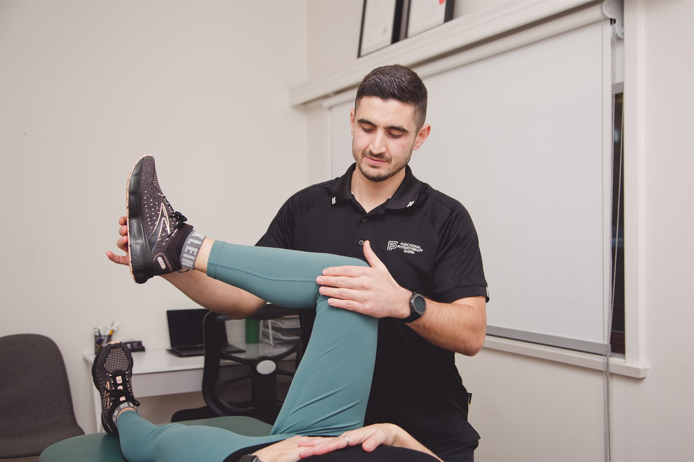
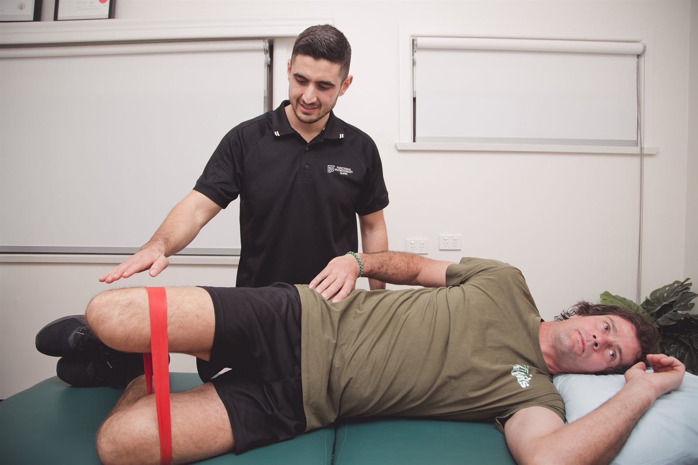

An ACL injury is a nine-to-twelve month project, not a six-week one. We take you through the whole of it — prehab, surgery or not, staged rehabilitation and objective testing before you return — without a weekly drive to Sydney.

The anterior cruciate ligament stops the shin bone sliding forward on the thigh bone, and controls rotation at the knee. Lose it and the knee becomes unreliable in exactly the movements sport demands.
Most ACL injuries are not the result of a collision. The majority happen without contact at all: decelerating hard, landing awkwardly from a jump, or planting a foot and changing direction while the knee collapses inward. That is why they are so common in netball, football, rugby league, basketball and touch — all sports built on rapid deceleration and change of direction.
The ACL rarely tears in isolation. Meniscal tears, injury to the medial collateral ligament and bone bruising commonly accompany it, and those associated injuries often influence both the surgical decision and the pace of rehabilitation. A thorough assessment establishes what else is involved rather than treating the ACL as the whole story.
Women and girls sustain ACL injuries at notably higher rates than men in the same pivoting sports, for a combination of anatomical, hormonal and neuromuscular reasons. The neuromuscular part — landing mechanics, hip and knee control, strength — is trainable, which is the basis of the prevention programs discussed below.
The history is usually more informative than the examination in the first 48 hours, and far more informative than a swollen knee that will not bend.
The classic account includes a pop — heard or felt — at the moment of injury, an immediate sense that the knee gave way, rapid swelling within the first few hours, and an inability to continue playing. Rapid swelling in particular is significant: a knee that swells inside a couple of hours has usually bled into the joint, and bleeding points to a structure with a blood supply, such as the ACL.
In the days that follow, people often describe the knee feeling unstable or untrustworthy on turning, or giving way on stairs or uneven ground. Some knees settle enough to walk on reasonably comfortably within a fortnight, which sometimes convinces people nothing serious happened. It is not a reliable indicator.
Get it assessed. We examine the knee with specific ligament tests, work out what else may be involved, settle the swelling, restore range of motion and get the quadriceps firing again — all of which are useful whatever the eventual decision about surgery. If the findings warrant it, we will organise imaging and refer you for a surgical opinion. Early loss of full extension and a quadriceps that shuts down are the two things most worth preventing in that first fortnight, because both make everything afterwards harder.
Not automatically. The honest answer depends on what you want to go back to, not just on what the scan shows.
Reconstruction is commonly recommended for people who want to return to pivoting, cutting and contact sport, and for knees that continue to give way despite good rehabilitation. It is a well-established operation with generally good outcomes, and the graft is usually taken from your own hamstring, patellar or quadriceps tendon.
It is not the only path. There is a substantial body of evidence that a proportion of people manage very well without reconstruction — particularly those whose sport and work do not demand repeated pivoting, and those whose knees prove stable once strength and neuromuscular control are properly restored. Structured rehabilitation first, with the surgical decision revisited afterwards, is a legitimate and increasingly common approach.
Our role is not to make that decision for you or for your surgeon. It is to make sure the decision is an informed one, to prepare the knee properly either way, and to say so plainly if we think the rehabilitation is not delivering the stability you need. Conservative ACL management is a particular interest of our principal physiotherapist, Chris Vitucci — so if you want the non-surgical option properly explored rather than waved past, you are in the right place.
The state of the knee going into surgery predicts the state of the knee coming out of it. Quadriceps strength before reconstruction is one of the better predictors of function afterwards. So if surgery is planned, we use the waiting period deliberately: restore full extension and flexion, settle the swelling completely, rebuild quadriceps and hamstring strength as far as possible, and teach you the early post-operative exercises before you are sore and groggy rather than after.
Roughly nine to twelve months to competitive sport. Progression is by meeting criteria, not by reaching a date on a calendar.
Protect the graft, eliminate swelling, restore full extension and progressively regain flexion, and wake the quadriceps up. Unglamorous, and the phase that most determines the rest.
Progressive loading of the whole leg and hip, closing the strength gap against the other side, restoring normal walking and building the base that later phases will sit on.
Plyometrics, hopping, landing mechanics, deceleration and change of direction, introduced progressively once strength criteria are met. Running usually begins in this window, not before.
Sport-specific loading, contact exposure where relevant, and formal testing — strength symmetry, a hop test battery, movement quality — before clearance to train fully and then to play.
ACL injuries are, to a meaningful extent, preventable. Structured neuromuscular warm-up programs — the sort built into FIFA’s 11+ for football and Netball Australia’s KNEE program — combine strength, balance, landing technique and change-of-direction drills, and reduce ACL injury rates when they are performed consistently through a season. The catch is in the word consistently: they work when they replace the warm-up two or three times a week, and not when they are done for a fortnight in February.
For clubs and teams around Dapto and the Illawarra, we can help set that up properly — teach the program to coaches so it does not depend on a physio being present, screen players who have a previous knee injury, and build individual programs for the ones carrying the most risk.
For individual athletes returning from a first ACL injury, prevention is not optional. Re-injury risk — to the same knee or the other one — is highest in the first two years, and is reduced substantially by completing rehabilitation properly and by continuing the strength and landing work after you have been cleared.

An ACL reconstruction involves the better part of a year of rehabilitation, with regular supervised sessions for much of it. The surgery itself might be a single day in Wollongong or Sydney; the rehabilitation is fifty or more appointments spread across nine to twelve months, most of them requiring equipment and supervision.
That arithmetic is why doing it close to home matters. Adherence is the single biggest determinant of ACL rehabilitation outcomes, and adherence collapses when every session involves a long drive. Being ten minutes from home in Dapto — and being able to book before or after work — is not a convenience detail; it is the thing that makes the program finishable.
We are happy to work alongside your surgeon’s protocol and to report progress back to them. If you have not had your surgical consultation yet, we can get the knee into good condition in the meantime, which is time you cannot get back later.
Knee injuries rarely arrive alone. These are the pages most often read alongside this one.
Diagnosis, treatment and staged return-to-sport rehabilitation for athletes at every level.
Read moreServiceDiagnosis, load management and a staged return-to-running plan for runners of every level.
Read moreFunding pathwayWhat an appointment costs, and every way it can be funded — private health, Medicare, WorkCover, NDIS.
Read moreWhether you are two days post-injury or two weeks post-surgery, book an assessment and get a plan for the whole journey.